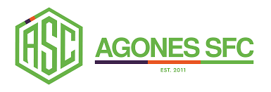

Laboral
En mis estudios he contado con dos períodos de prácticas que me han dado mucha experiencia.
En mis estudios he contado con dos períodos de prácticas que me han dado mucha experiencia.
En mi primera etapa deportiva realicé el erasmus plus donde viajé a Malta durante 3 meses, allí aprendí idiomas y ha organizar eventos.
Mi segunda etapa fue mas orientada a la animación y estuve 3 meses en la delegación de deportes de Santiponce.